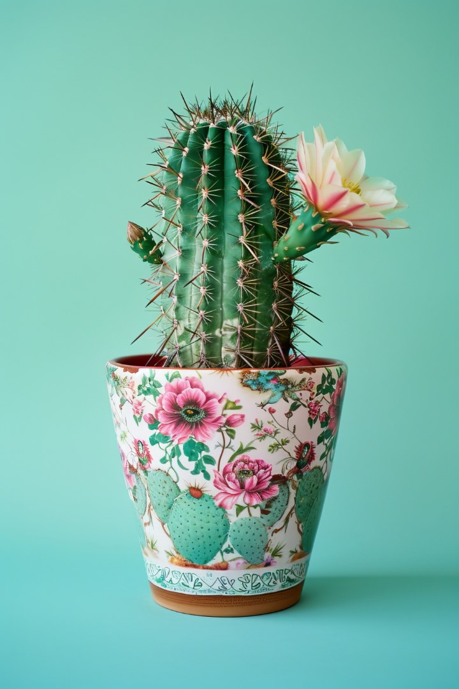

Principais Tipos de Plantas para Casa
Suculentas
Ideais para quem esquece de regar. Exigem poucos cuidados e muita luz.
Espada de São Jorge
Resistente e purificadora do ar, ótima para ambientes internos.
Samambaia
Prefere sombra e umidade. Suas folhas dão leveza ao espaço.
Jiboia
Rústica e fácil de cultivar, pode ser pendente ou trepadeira.

Cacto
Um símbolo de resistência e beleza, o cacto pode ser uma adição encantadora ao seu espaço.
Zanioculca
Esses pequenos companheiros verdes são fáceis de cuidar e trazem um toque único ao ambiente.